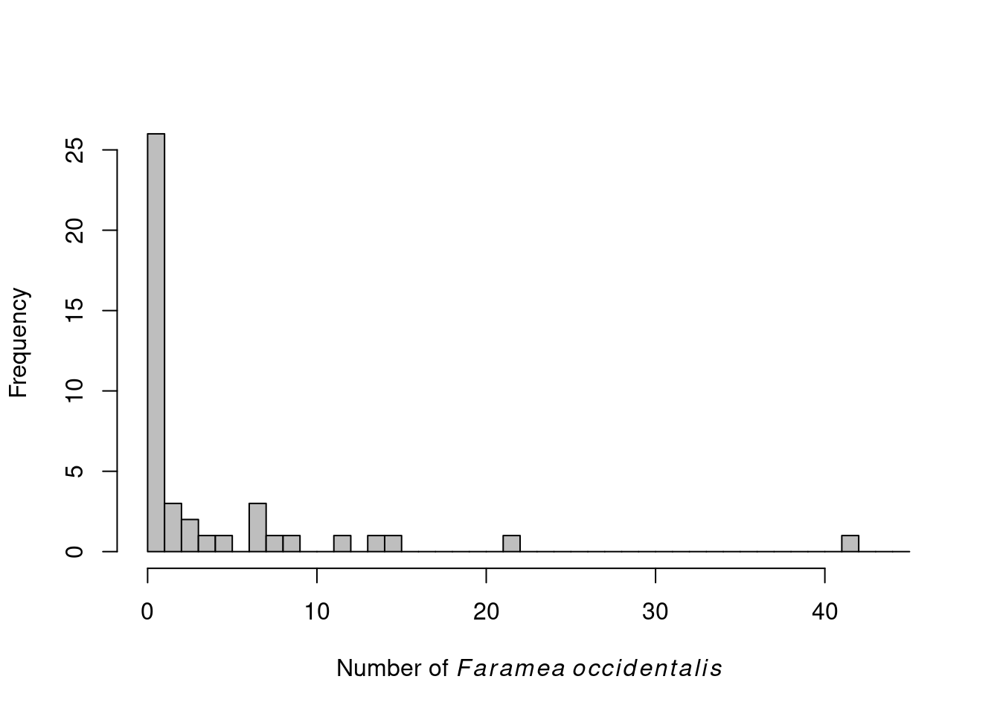
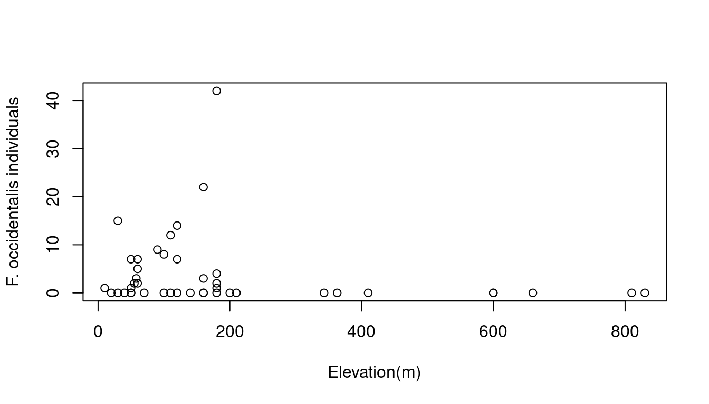

Chapter 11 What can we do with count data?
Count data is characterized by:
- Positive values: you do not count -7 individuals
- Integer values: you do not count 7.56 individuals
- Exhibits larger variance for large values
To illustrate count data we will use a new dataset called faramea.
# Load the dataset
faramea <- read.csv("faramea.csv", header = TRUE)In this dataset, the number of trees of the species Faramea occidentalis was measured in 43 quadrants in Barro Colorado Island in Panama. For each quadrant, environmental characteristics were also recorded such as elevation or precipitation. Let us take a look at the number of Faramea occidentalis found at each quadrant.
# Histogram of F. occidentalis count data
hist(faramea$Faramea.occidentalis, breaks=seq(0,45,1), xlab=expression(paste("Number of ",
italic(Faramea~occidentalis))), ylab="Frequency", main="", col="grey")
We can see that there are only positive and integer values.
In this example, we want to test whether elevation (a continuous explanatory variable) influences Faramea occidentalis abundance.

Hence, a Poisson GLM (i.e. a simple Poisson regression) seems to be a good choice to model the number of Faramea occidentalis as a function of elevation. Poisson GLMs are usually a good way to start modeling count data.
11.1 Poisson GLMs
11.1.1 The Poisson distribution
The Poisson distribution specifies the probability of a discrete random variable \(Y\) and is given by:
\[f(y, \,\mu)\, =\, Pr(Y = y)\, =\, \frac{\mu^y \times e^{-\mu}}{y!}\]
\[E(Y)\, =\, Var(Y)\, =\, \mu\]
where \(\mu\) is the parameter of the Poisson distribution
The Poisson distribution is particularly relevant to model count data because it:
- specifies the probability only for integer values
- \(P(y<0) = 0\), hence the probability of any negative value is null
- \(Var(Y) = \mu\) (the mean-variance relationship) allows for heterogeneity (e.g. when variance generally increases with the mean)
A Poisson GLM will model the value of \(\mu\) as a function of different explanatory variables:
Step 1.
We assume \(Y_i\) follows a Poisson distribution with mean and variance \(\mu_i\).
\[Y_i ∼ Poisson(\mu_i)\]
\[E(Y_i) = Var(Y_i) = \mu_i\]
\[f(y_i, \, \mu_i) = \frac{\mu^{y_i}_i \times e^{-\mu_i}}{y!}\]
\(\mu_i\) corresponds to the expected number of individuals.
Step 2.
We specify the linear predictor of the model just as in a linear model.
\[\underbrace{\alpha}_\text{Intercept} + \underbrace{\beta_1}_\text{slope of 'Elevation'} \times \text{Elevation}_i\]
Step 3.
The link between the mean of \(Y_i\) and linear predictor is a logarithmic function can be written as:
\[log(\mu_i) = \alpha + \beta_1 \times \text{Elevation}_i \]
It can also be written as:
\[\mu_i = e^{ \alpha + \beta \times \text{Elevation}_i}\]
This shows that the impact of each explanatory variable is multiplicative. Increasing Elevation by one increases μ by factor of exp( \(\beta_\text{Elevation}\) ).
We can also write it as:
\[\mu_i = e^{\alpha} \times e^{\beta_1^{\text{Elevation}_i}}\]
If \(β_j = 0\) then \(exp(β_j) = 1\) and \(μ\) is not related to \(x_j\). If \(β_j > 0\) then \(μ\) increases if \(x_j\) increases; if \(β_j < 0\) then \(μ\) decreases if \(x_j\) increases.
11.1.2 Poisson GLMs in R
Fitting a Poisson GLM in R requires only setting family = poisson in
the glm() function. By default the link function is log.
# Fit a Poisson GLM
glm.poisson = glm(Faramea.occidentalis ~ Elevation,
data = faramea,
family = poisson) # this is what makes it a Poisson GLM! Note the default link is log.
summary(glm.poisson)##
## Call:
## glm(formula = Faramea.occidentalis ~ Elevation, family = poisson,
## data = faramea)
##
## Deviance Residuals:
## Min 1Q Median 3Q Max
## -3.3319 -2.7509 -1.5451 0.1139 11.3995
##
## Coefficients:
## Estimate Std. Error z value Pr(>|z|)
## (Intercept) 1.7687001 0.1099136 16.092 < 2e-16 ***
## Elevation -0.0027375 0.0006436 -4.253 2.11e-05 ***
## ---
## Signif. codes: 0 '***' 0.001 '**' 0.01 '*' 0.05 '.' 0.1 ' ' 1
##
## (Dispersion parameter for poisson family taken to be 1)
##
## Null deviance: 414.81 on 42 degrees of freedom
## Residual deviance: 388.12 on 41 degrees of freedom
## AIC: 462.01
##
## Number of Fisher Scoring iterations: 10Intercept = \(\alpha\)
Elevation = \(\beta\)
The output is similar to a ‘lm’ output (seeWorkshop 4) and gives us the parameter estimates which can also be retrieved using other functions:
# intercept
summary(glm.poisson)$coefficients[1,1]## [1] 1.7687# slope of elevation
summary(glm.poisson)$coefficients[2,1]## [1] -0.002737509Now we can estimate the residual and null deviances. In our model the unknown parameters are the intercept (\(\alpha\)) and the slope of elevation (\(\beta\)):
\[log(\mu_i) = 1.769 - 0.0027 \times \text{Elevation}_i\]
which we can also write as:
\[\mu_i = e^{1.769 - 0.0027 \times \text{Elevation}_i}\] Remember that to estimate the unknown parameter, maximum likelihood estimation is used.
The residual deviance is defined as twice the difference between the log-likelihood of a model that provides a perfect fit and the log-likelihood of our model.
\[\text{residual deviance} = 2 \, log(L(y;\,y)) - 2 \, log(L(y;\, \mu))\]
In a Poisson GLM, the residual deviance should be close to the residual degrees of freedom. However, our residual deviance is much higher than the degrees of freedom of our model!
\[388.12 >> 41\]
11.2 The problem of overdispersion
An important aspect of the summary can be found in the last lines.
# Null deviance: 414.81 on 42 degrees of freedom
# Residual deviance: 388.12 on 41 degrees of freedomRemember that ML estimation is used to estimate the parameters. In the goodness-of-fit section we mentioned that the deviance was a ML equivalent of the sum of squares in linear models. Here, the null deviance and the residual deviance are equivalent to the total sum of squares and the residual sum of squares respectively. The residual deviance is defined as twice the difference between the log likelihood of a model that provides a perfect fit to the data (a saturated model) and the log likelihood of the model. If our model is correct the asymptotic distribution of the residual deviance is approximated using χ² distribution with \(n\)-\(p\)-1 degrees of freedom (computed as \(n\)-\(p\)-1, where \(n\) is the number of observations and \(p\) the number of covariates). This implies that residual deviance should be equal to the residual degrees of freedom. In our example, the residual deviance equals 388.12 while we have 41 (43-1-1) degrees of freedom. This former is greater to the former by 9.5 times, the model is then overdispersed.
Overdispersion As a consequence overdispersion can be computed for any model using the parameter φ:
φ = residual deviance / residual degrees of freedom
* φ < 1 indicates underdispersion
* φ = 1 indicates no overdispersion
* φ > 1 indicates overdispersionWhy does a Poisson GLM exhibit overdispersion? This arises when the variance of the data is higher than expected from the Poisson distribution. This frequently occurs when data includes many zeros and/or many very high values. Looking back at the distribution of our data (above) suggests that our data contains many zeroes preventing us to use a Poisson GLM. Overdispersion may also result from missing covariates, missing interaction terms or presence of strong outliers, preventing us from using a Poisson GLM.
The Poisson distribution can account only partially for heterogeneity in the data due to the mean variance relationship, but in some cases variance increases even higher than the mean. Computing the mean and the variance of our dataset suggests this is occurring:
mean(faramea$Faramea.occidentalis)
var(faramea$Faramea.occidentalis)In practice, Poissons GLM are useful for describing the mean µi but underestimates the variance in the data, making all model-based tests too liberal! There are two ways of dealing with overdispersion and will be developed below:
- correct for it by doing a quasi-Poisson GLM
- choose another distribution such as the negative binomial
11.3 Quasi-Poisson GLMs
The principle behind a quasi-Poisson GLM is very simple; the overdispersion parameter (φ) is added to the expected variance equation:
\[E(Y_i) = \mu_i\]
\[Var(Y_i) = φ.\mu_i\]
The linear predictor and the link function remains the same. The difference is that \(φ\) will first be estimated to correct the model. Parameter Estimates will be the same but the standard errors of the parameters are multiplied by \(√φ\), in other terms, some marginally significant p-values may no longer hold.
In R, The quasipoisson family object can be used to deal with
count data exhibiting overdispersion (the quasibinomial family
object can do the same for binomial data). The fitted φ value will be
returned in the summary of the GLM. There are two ways to perform this
GLM:
# Option 1, fit a new quasi-Poisson GLM
glm.quasipoisson = glm(Faramea.occidentalis~Elevation, data=faramea, family=quasipoisson)
# Option 2, build from the previous model and update it:
glm.quasipoisson = update(glm.poisson,family=quasipoisson)
# output
summary(glm.quasipoisson)##
## Call:
## glm(formula = Faramea.occidentalis ~ Elevation, family = quasipoisson,
## data = faramea)
##
## Deviance Residuals:
## Min 1Q Median 3Q Max
## -3.3319 -2.7509 -1.5451 0.1139 11.3995
##
## Coefficients:
## Estimate Std. Error t value Pr(>|t|)
## (Intercept) 1.768700 0.439233 4.027 0.000238 ***
## Elevation -0.002738 0.002572 -1.064 0.293391
## ---
## Signif. codes: 0 '***' 0.001 '**' 0.01 '*' 0.05 '.' 0.1 ' ' 1
##
## (Dispersion parameter for quasipoisson family taken to be 15.96936)
##
## Null deviance: 414.81 on 42 degrees of freedom
## Residual deviance: 388.12 on 41 degrees of freedom
## AIC: NA
##
## Number of Fisher Scoring iterations: 10If you look at the summary of the model you will see that \(φ\) is estimated as 15.97. We then made a good choice by updating the model to account for overdispersion. However if we look at P-values we can note that elevation is no longer significant. Yet, 15.97 is quite a lot of overdispersion, and in general quasi-Poisson GLMs will be favoured when \(φ\) is included between 1 and 15 though these limits are arbitrary. When overdispersion is higher than 15-20 we recommend moving to the negative binomial.
Two other points are important to keep in mind when using quasi-Poisson GLMs and dealing with overdispersion:
Quasi-Poisson GLMs do not have AIC scores. An important aspect is that quasi-Poisson GLMs do not correspond to models with fully specified likelihoods and rely on quasi-ML estimation (i.e. pseudolikelihood). One consequence is that quasi-Poisson GLMs do not have AIC scores for model comparisons. However, variants of AIC have been developed to deal with this situation (e.g. quasi-AIC).
Overdispersion affects model comparison. Indeed overdispersion also influences the comparison of two nested models and has to be taken into account when φ is known. For instance, let us assume that we want to compare GLM1, with \(p_1\) parameters to GLM2, with \(p_2\) parameters, such that GLM1 is nested within GLM2 and \(p_2>p_1\). Model comparison is achieved based on a generalized likelihood ratio test, which can be written as a function of the difference of deviances between the two GLMs, \(D_1\) and \(D_2\) respectively. If Overdispersion is known, deviances have to be scaled (i.e. corrected) accordingly as \(D^* = D/φ\). The final test will be based on the criterion \(D^*_1 - D^*_2\) which is assumed to follow a \(χ²\) distribution with \(p_1-p_2\) degrees of freedom when GLM1 is correct.
In some cases \(φ\) is not known. For instance, this occurs when you run a GLM with a normal error distribution. In that case, \(φ\) can be estimated a posteriori using the residual deviance of the larger model so the criterion becomes:
\[\frac{(D_1-D_2)/(p_2-p_1)}{D_2(n-p_2)}\]
and is assumed to follow a F distribution with \(p_1-p_2\) and \(n-p_2\) degrees of freedom.
Try also deviance analysis to test for the effect of Elevation
null.model <- glm(Faramea.occidentalis ~ 1,
data = faramea,
family = quasipoisson)
anova(null.model, glm.quasipoisson, test = "Chisq")## Analysis of Deviance Table
##
## Model 1: Faramea.occidentalis ~ 1
## Model 2: Faramea.occidentalis ~ Elevation
## Resid. Df Resid. Dev Df Deviance Pr(>Chi)
## 1 42 414.81
## 2 41 388.12 1 26.686 0.1961Dispersion parameter:

11.4 Negative binomial GLMs
GLM with a negative binomial (NB) distribution are favored when overdispersion is extreme. The NB distribution contains an additional parameter \(k\), particularly handy for count data containing a preponderance of zeros. Before we go into R stuff, we should see what lies behind a negative binomial GLM. A NB distribution is actually a combination of two distributions: a Poisson distribution and a gamma distribution. The NB distribution first assumes that a discrete random variable is Poisson distributed but its mean, \(µ\) is assumed to follow a gamma distribution. The mixture between the Poisson and gamma distributions can be simplified into a density function specific to the

NB which has two parameters \(µ\) and \(k\).
\[Y \sim NB(µ, k)\]
\[E(Y) = µ~and~Var(Y) = µ + µ²/k\]
Here, we can see how overdispersion will be accounted for by NB distribution in GLMs. The second term of the variance determines the amount of overdispersion. In fact, it is indirectly determined by \(k\), where \(k\) is also called the dispersion parameter. If \(k\) is large (relative to \(μ²\)), the second term, \(µ²/k\) approximates 0, and the variance of Y is \(μ\). In such cases the NB converges to the Poisson distribution and you might as well use a Poisson distribution. The smaller \(k\), the larger the overdispersion. Just like with others GLMs, a NB GLM is specified following the fundamental three steps. It first assumes that Yi is negative binomial distributed with mean \(μ_i\) and parameter \(k\).
\[Y_i \sim NB(µ_i, k)\]
\[E(Y_i) = µ_i~and~Var(Y_i) = µ_i + µ_i²/k\]
The two last steps define the systematic part and the link function between the mean of \(Y_i\) and the predictor function. In NB GLMs the link function is logarithmic ensuring that fitted values are always positive.
\[log(µ_i) = β_0 + βX_i\]
or
\[µ_i = exp(β_0 + βX_i)\]
The negative binomial GLM can be built using the glm.nb() function from
the MASS package:
glm.negbin = glm.nb(Faramea.occidentalis~Elevation, data=faramea)
summary(glm.negbin)##
## Call:
## glm.nb(formula = Faramea.occidentalis ~ Elevation, data = faramea,
## init.theta = 0.2593107955, link = log)
##
## Deviance Residuals:
## Min 1Q Median 3Q Max
## -1.36748 -1.17564 -0.51338 -0.05226 2.25716
##
## Coefficients:
## Estimate Std. Error z value Pr(>|z|)
## (Intercept) 2.369226 0.473841 5.00 5.73e-07 ***
## Elevation -0.007038 0.002496 -2.82 0.00481 **
## ---
## Signif. codes: 0 '***' 0.001 '**' 0.01 '*' 0.05 '.' 0.1 ' ' 1
##
## (Dispersion parameter for Negative Binomial(0.2593) family taken to be 1)
##
## Null deviance: 41.974 on 42 degrees of freedom
## Residual deviance: 36.343 on 41 degrees of freedom
## AIC: 182.51
##
## Number of Fisher Scoring iterations: 1
##
##
## Theta: 0.2593
## Std. Err.: 0.0755
##
## 2 x log-likelihood: -176.5090The summary is similar to other GLMs summaries (e.g. Poisson GLMs), though we now have a parameter theta, which stands for parameter \(k\) in the variance of the NB distribution. Its standard error is also provided, but care is needed with its use as the interval is not symmetric and we are testing on the boundary.
11.5 Plotting the final GLM to the data
The NB GLMs appear to be the best fit to our data. We can plot the relationship between the abundance of Faramea occidentalis and elevation.
Use summary to get the parameters.
summary(glm.negbin)$coefficients[1, 1]## [1] 2.369226summary(glm.negbin)$coefficients[2, 1]## [1] -0.007038124Use the standard errors to build the confidence envelope.
summary(glm.negbin)$coefficients[1, 2]## [1] 0.4738409summary(glm.negbin)$coefficients[2, 2]## [1] 0.002496143# Make model predicitions
pp <- predict(glm.negbin,
newdata = data.frame(Elevation = 1:800),
se.fit = TRUE)
linkinv <- family(glm.negbin)$linkinv # inverse-link function
# Prepare to plot model results
pframe <- as.data.frame(pp$fit)
names(pframe) <- "pred0"
pframe$pred <- linkinv(pp$fit)
sc <- abs(qnorm((1-0.95)/2)) # Normal approx. to likelihood
pframe <- transform(pframe, lwr = linkinv(pred0-sc*pp$se.fit), upr = linkinv(pred0+sc*pp$se.fit))
# Plot!
plot(faramea$Elevation, faramea$Faramea.occidentalis,
ylab = 'Number of F. occidentalis', xlab = 'Elevation(m)')
lines(pframe$pred, lwd = 2) # predicted values
lines(pframe$upr, col = 2, lty = 3, lwd = 2) # show error bounds
lines(pframe$lwr, col = 2, lty = 3, lwd = 2)We can see that the number of Faramea occidentalis significantly decreases with elevation. However, the confidence envelope of the NB model is large at low elevation.
11.5.1 Challenge 3
Use the mites dataset! Model the abundance of the species Galumna as a function of the substrate characteristics (water content WatrCont and density SubsDens)
Do you need to account for overdispersion? Which covariates have a significant effect? Select the best model!
# Challenge 3
mites <- read.csv("data/mites.csv", header = TRUE)Drop each term in turn and compare the full model with a nested model using the command:
# This is how to do model comparison by dropping terms in turn
drop1(MyGLM, test = "Chi")Specify manually a nested model, call it for example MyGLM2, and use the command:
# You can also manually specify a nested model and compare it to your full model with this command:
anova(MyGLM, MyGLM2, test = "Chi")Click here to see the solution!
# Poisson GLM
glm.p = glm(Galumna~WatrCont+SubsDens, data=mites, family=poisson)
# quasi-Poisson GLM
glm.qp = update(glm.p,family=quasipoisson)
# model selection
drop1(glm.qp, test = "Chi")## Single term deletions
##
## Model:
## Galumna ~ WatrCont + SubsDens
## Df Deviance scaled dev. Pr(>Chi)
## <none> 101.49
## WatrCont 1 168.10 31.711 1.789e-08 ***
## SubsDens 1 108.05 3.125 0.07708 .
## ---
## Signif. codes: 0 '***' 0.001 '**' 0.01 '*' 0.05 '.' 0.1 ' ' 1# or
glm.qp2 = glm(Galumna~WatrCont, data=mites, family=quasipoisson)
anova(glm.qp2, glm.qp, test="Chisq")## Analysis of Deviance Table
##
## Model 1: Galumna ~ WatrCont
## Model 2: Galumna ~ WatrCont + SubsDens
## Resid. Df Resid. Dev Df Deviance Pr(>Chi)
## 1 68 108.05
## 2 67 101.49 1 6.5657 0.07708 .
## ---
## Signif. codes: 0 '***' 0.001 '**' 0.01 '*' 0.05 '.' 0.1 ' ' 1
11.6 Conclusion on GLMs with count data
All the GLMs introduced (Poisson, quasi-Poisson and NB) to model count data use the same log-linear mean function (\(log(µ) = βx\)), but make different assumptions about the remaining likelihood. Quasi-Poisson and NB are favored to deal with overdispersion. However, in some cases the data may contains too many zeros and zero-augmented models can be useful as they extend the mean function by modifying (typically, increasing) the likelihood of zero counts (e.g. zero-inflated Poisson [ZIP]).